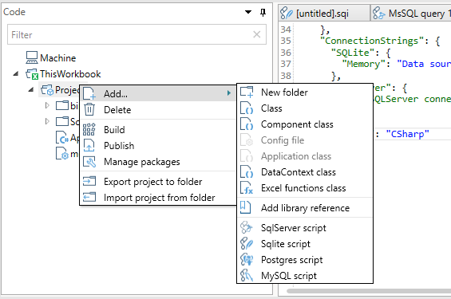

The QueryStorm project system
Code files in QueryStorm are organized into projects. Projects contain user code, scripts and configuration files, and are fairly similar to projects in Visual Studio.
In order to run the code inside a project, the project needs to be built (compiled). The outputs of the Build process are stored inside the bin folder of the project. The outputs will usually consist of the project dll, the debug and documentation files (pdb + xml docs) and a manifest file that's used by the QueryStorm Runtime.
Two types of projects
There are two kinds of projects in QueryStorm: Workbook projects and Extension projects.
Workbook projects are defined inside a particular workbook and serve to automate the workbook, and to define functions that are specific to the containing workbook. Both the code and as the output files of a workbook project are stored inside the workbook itself.
Extension projects are defined at the machine-level, and serve to define functions that should be available in all workbooks. Building (compiling) an extension project produces an extension package. Extension packages can be shared with other users by publishing them to a network share or to an online server. They can be downloaded by end users via the Extensions Manager that's part of the QueryStorm runtime.
Supported programming languages
QueryStorm projects support source code written in C# and VB.NET. While C# is more popular with developers, VB.NET is more familiar to people with VBA experience. The two languages have a somewhat different syntax, but are practically identical in capabilities. Source code for both languages is compiled using Microsoft's Roslyn compiler.
You can choose the language for your project when you are creating it. This setting is saved in the module.config file and can be changed manually at a later point if needed:
1 | |
The allowed values are "CSharp" and "VisualBasic". Alternatively, you can use the number 1 (without quotes) for C# and 2 for VB.NET.
This setting affects the compilation of the project, as well as the class templates that are used when adding new files to projects.
Kinds of files
The project system supports the following kinds of files:

- Class files (.cs or .vb) contain the logic of your application. Depending on the language of the project, they will have a
.csor.vbextension. - The Application file (
App.cs/App.vb) file defines a class that is the entry point of the application and serves to initialize services, the data context and components. There is a maximum of oneAppfile per project. - The data context file defines the tables, variables and events that will be visible to scripts and components. There is a maximum of one data context file per project.
- Component files are ordinary class files that are generated from a template that provides a skeleton component class.
- Excel function class files are ordinary class files that are generated from a template that provides an example implementation of a custom Excel function.
- Script files contain SQL and C# scripts (VB.NET is not supported for scripting) that can process Excel data or fetch data from databases or REST services, or simply run arbitrary code. SQL scripts support a preprocessor syntax that allows defining functions and commands via SQL. Saving a SQL script generates supporting classes that define functions and commands and strongly typed classes for results.
- The module.config file contains the configuration settings for the project, including a list of library and NuGet references, language selection (CSharp/VisualBasic), connection strings and project metadata (name, version, etc...).
Project folders
Files can be organized into more-or-less arbitrary folders. The exception are the two folders that have a special meaning, specifically: bin and lib.
As mentioned earlier, the bin folder contains the build output of the project. Its contents are cleared before each build, so it should not be used to store any user files.
The lib folder contains dll files that were added as library references, as well as dll files that have been downloaded as NuGet packages. All dlls inside this folder are automatically referenced and their types can be used in your code.
When publishing a package, the package will contain all files from both the bin and lib folders.
Referencing dlls and NuGet packages
Projects can use existing libraries in two ways:
- By installing NuGet packages
- By referencing local dll files

In both cases, dll files are added to the lib folder and are immediately referenced by your project.
When referencing a local file, an entry is added to the "References" section of the module.config file, while NuGet references are added to the "Dependencies" section.